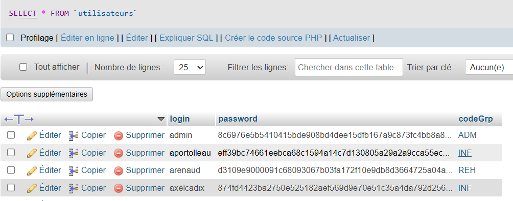

L'objectif de cette mission était de créer un formulaire HTML pour la création d'un utilisateur depuis l'espace d'administration et d'intégrer le processus côté serveur avec PHP.
Le formulaire permet à un administrateur de créer un nouvel utilisateur. Voici la structure HTML :
<form method="POST" action="" enctype="multipart/form-data">
<div class="form-group">
<label for="nom">Nom</label>
<input type="text" name="nom" id="nom" required>
</div>
<div class="form-group">
<label for="prenom">Prénom</label>
<input type="text" name="prenom" id="prenom" required>
</div>
<div class="form-group">
<label for="login">Login</label>
<input type="text" name="login" id="login" required>
</div>
<div class="form-group">
<label for="password">Mot de Passe</label>
<input type="password" name="password" id="password" required>
</div>
<div class="form-group">
<label for="groupe">Groupe</label>
<select name="groupe" id="groupe">
<option value="ADM">Administrateur</option>
<option value="RH">Ressources Humaines</option>
<option value="LOG">Logistique</option>
<option value="INF">Informatique</option>
</select>
</div>
<button type="submit">Sauvegarder</button>
</form>
Les groupes 'Administrateur', 'Ressources Humaines', 'Logistique' et 'Informatique' ont été ajoutés manuellement dans la base de données avec la commande SQL suivante :
INSERT INTO groupes (codeGrp, libelle)
VALUES
('ADM', 'Administrateur'),
('RH', 'Ressources Humaines'),
('LOG', 'Logistique'),
('INF', 'Informatique');
Cette commande a permis l'insertion de ces quatre groupes dans la table des groupes.
Voici le code PHP utilisé pour récupérer les groupes depuis la base de données et les afficher dans la liste déroulante du formulaire :
$sql = "SELECT codeGrp, libelle FROM groupes";
$stmt = $pdo->query($sql);
while ($row = $stmt->fetch()) {
echo '<option value="' . $row['codeGrp'] . '">' . $row['libelle'] . '</option>';
}
Ce code effectue une requête SQL pour récupérer tous les groupes et les afficher dans un menu déroulant sous forme d'éléments `
Voici le code PHP qui permet de récupérer les données soumises par le formulaire via la méthode POST et de les insérer dans la base de données :
if ($_SERVER['REQUEST_METHOD'] == 'POST') {
$nom = htmlspecialchars($_POST['nom']);
$prenom = htmlspecialchars($_POST['prenom']);
$login = htmlspecialchars($_POST['login']);
$password = password_hash($_POST['password'], PASSWORD_DEFAULT);
$groupe = $_POST['groupe'];
$sql = "INSERT INTO utilisateurs (nom, prenom, login, password, codeGrp)
VALUES (?, ?, ?, ?, ?)";
$stmt = $pdo->prepare($sql);
$stmt->execute([$nom, $prenom, $login, $password, $groupe]);
echo "Utilisateur créé avec succès!";
}
Ce code prend les valeurs envoyées par le formulaire, sécurise les données, puis insère un nouvel utilisateur dans la base de données. Le mot de passe est haché pour des raisons de sécurité.
Une fois le formulaire soumis, l'utilisateur est ajouté à la base de données et son mot de passe est correctement haché. Le processus est vérifié en accédant à la base de données et en confirmant l'ajout de l'utilisateur.
